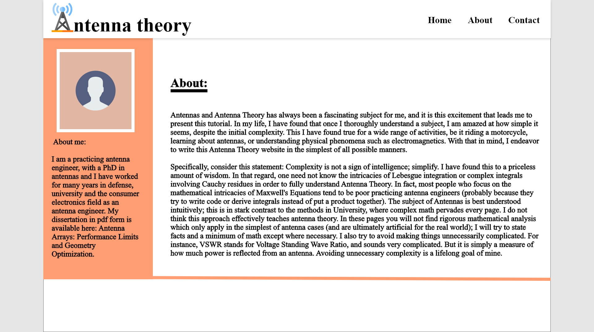

High Fidelity Designs



AntennaTheory.com Rework
Context
As a RF Engineer, I have refered to "Antenna theory" (antena-theory.com) website countless number of time to verify the formulaes and/or the theory. Although the website is accurate and knowledgable I had problem navigating through it. That's why I decided to redesign, making it more user friendly and easier to navigate.
Name: Abigail Teller
Age: 30
Goals
Pain Points
As for choosing the color scheme for the website, author's original idea was implemented. The orange color represent the author's vision of making the website a little less academic but still retain the optimistic and informative nature. The main color also keeps people engaged on site for a longer while.
Wireframing
The data on the website is scattered and has no index and easy navigation. The Home page introduces a new look. The index classifies the topic into 9 parts. It is also sub-classified for ease of navigation.
Wireframing II
The info-page is the base page in the hierarchy of classification. It holds all the information about the article. The sidebar in the info-page will have quick links towards the next topic in the article/chapter.
The author is a well known antenna enigneer in the community and very knowledgable. The about page details the purpose of the site and a brief about the author. Author is approchable and welcomes all the inquisitive people to pick his brain. The contact page is meant for such people to contact him.